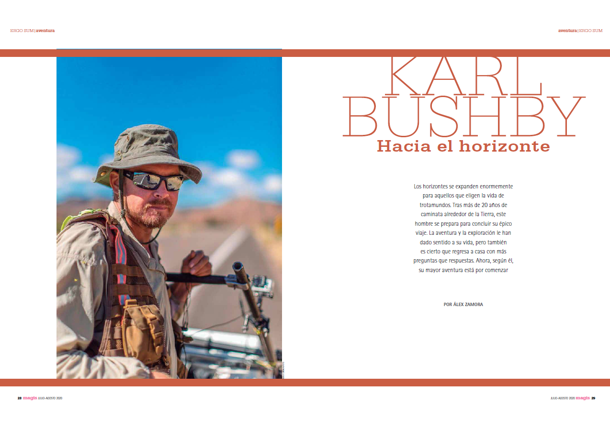

Alejandro Zamora
Storyteller and content creator with a journalism background and experience across the automotive industry, the gaming sector, and creative agencies. Mexican, based in Germany.

Toward the horizon
I met Karl Bushby, a renowned adventurer on the longest unbroken walk in history, by chance — and pitched the interview myself.
A collection of doormats in German speaking countries
A curious detail from door-to-door fundraisers' daily rounds, turned into a series that's now part of our brand identity.
Audi Q5 calendar
Concept, location scouting and visual direction for a calendar tracing the Q5's journey through Mexican heritage. Printed run of 10,000.
Reviving a community
New content formats to keep a 15-year-old game feeling fresh: shorts, memes, dedicated events — engagement up 3%.
Travel seminar in Antalya
Photo, video and social coverage of the Temmel Fundraising team's travel seminar in Antalya, December 2025.
Writing
A running list of my published writing — award-winning fiction, journalism and personal essays.